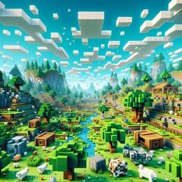
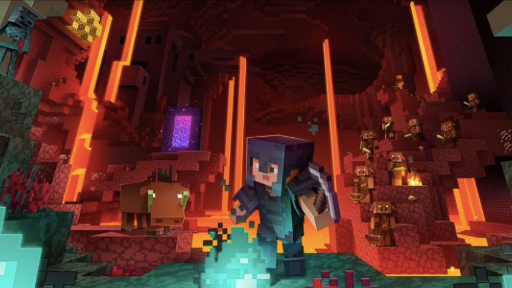
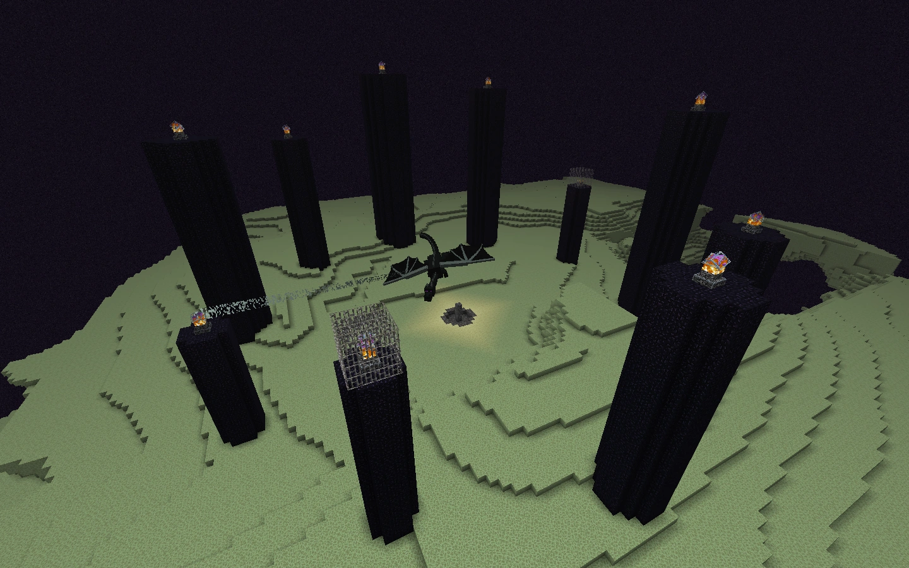
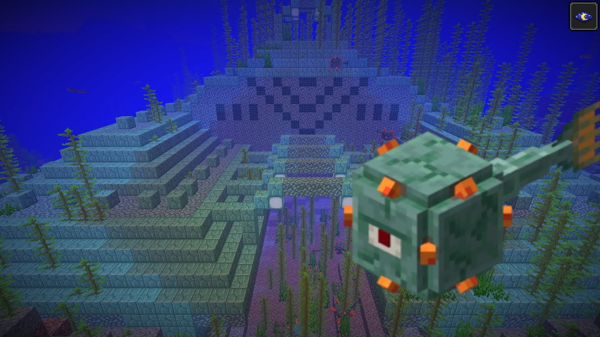
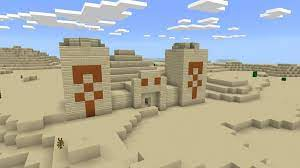
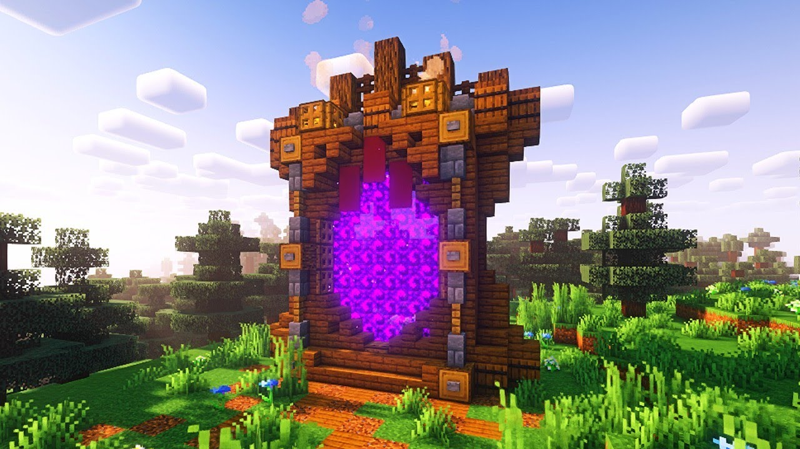
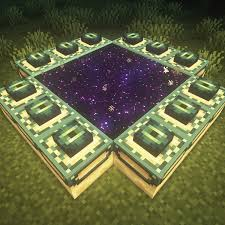
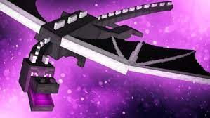

A HISTÓRIA DO MINECRAFT
O Minecraft é um jogo com uma narrativa aberta e interpretativa, o que significa que a história interna do jogo é revelada através de descobertas e explorações dentro de seu mundo, em vez de uma narrativa linear tradicional. No entanto, há elementos de lore e mistério que ajudam a construir o pano de fundo do jogo. Aqui está um resumo da história e lore por trás do Minecraft:
O MUNDO DE MINECRAFT
O universo do Minecraft é composto por diversos biomas e dimensões, cada um com suas características únicas:
- O Mundo Normal: Onde a maioria dos jogadores começa, este é o mundo primário do jogo, cheio de paisagens variadas, como florestas, desertos e montanhas. Aqui, você encontrará os recursos básicos, vilas e masmorras. 
- O Nether: Uma dimensão infernal cheia de lava, fungos e criaturas hostis como piglins e ghasts. É um lugar crucial para obter recursos especiais e preparar-se para o enfrentamento do Dragão do Fim. 
- O Fim: A dimensão final, onde reside o Dragão do Fim. Este é o objetivo final para muitos jogadores, e derrotar o Dragão do Fim marca o fim do "jogo" em termos de conclusão de uma missão principal. 
O ANTIGO IMPÉRIO
Dentro do lore do Minecraft, há referências a um antigo império que deixou muitos vestígios em suas estruturas e ruínas. Esses antigos habitantes são conhecidos como os "Antigos" ou "Civilização dos Antigos". As evidências desse império podem ser encontradas em várias estruturas, como:
- Ruínas Submersas e Templos Submersos: Locais antigos que frequentemente contêm tesouros e desafios subaquáticos. 
- Templos do Deserto e da Selva: Estruturas misteriosas cheias de armadilhas e recompensas. 
O PORTAIS E AS DIMENSÕES
A construção de portais é um aspecto fundamental da lore:
- Portal do Nether: Feito de blocos de obsidiana e aceso com fogo, permite a entrada no Nether. A necessidade de coletar materiais especiais e enfrentar perigos neste lugar se alinha com o lore de um mundo infernal e corrompido. 
- Portal do Fim: Feito de blocos de olho do fim, este portal leva aos domínios finais onde o Dragão do Fim reside. A ideia de um "fim" absoluto está alinhada com o conceito de conclusão e transcendência no jogo. 
A ORDEM DOS ENDERMAN
Os Enderman são criaturas misteriosas que carregam itens e podem teleportar. Sua origem e propósito não são totalmente claros, mas eles parecem ter uma conexão com O Fim. Existem especulações de que eles possam ser habitantes ou servos do Dragão do Fim, ou até mesmo entidades de outro mundo.

O DRAGÃO DO FIM
O Dragão do Fim é o principal antagonista do jogo. Sua presença no final do jogo sugere um papel central no equilíbrio das dimensões e no fluxo da história dentro do Minecraft. Derrotá-lo é visto como uma grande conquista e um marco na jornada do jogador.
